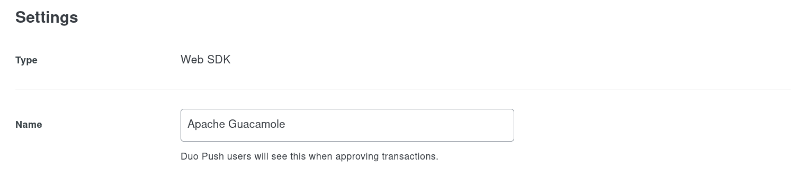

Using Duo for multi-factor authentication#
Guacamole’s Duo authentication extension allows the third-party Duo service to be used as an additional authentication factor for users of your Guacamole installation. If installed, users that attempt to authenticate against Guacamole will be sent to Duo’s service for further verification.
Warning
You will need to restart the Guacamole web application in order to complete configuration. Doing this will disconnect all active users, so please:
Do this only at a time that you can tolerate service unavailability, such as a scheduled maintenance window.
Keep in mind that configuration errors may prevent Guacamole from starting back up.
Note
Guacamole’s Duo support cannot currently be used alongside single sign-on. If you use Duo and need both MFA and SSO support for Guacamole, you will need to either use your SSO provider’s own Duo integration or use TOTP instead of Duo.
How Duo works with Guacamole#
Duo is strictly a service for verifying the identities of users that have already been partially verified through another authentication method. Thus, for Guacamole to make use of Duo, at least one other authentication mechanism will need be configured, such as a supported database or LDAP.
When a user attempts to log into Guacamole, other installed authentication methods will be queried first:
Only after authentication has succeeded with one of those methods will Guacamole reach out to Duo to obtain additional verification of user identity:

If both the initial authentication attempt and verification through Duo succeed, the user will be allowed in. If either mechanism fails, access to Guacamole is denied.
Adding Guacamole to Duo#
Duo does not provide a specific integration option for Guacamole, but Guacamole’s Duo extension uses Duo’s generic authentication API which they refer to as the “Web SDK”. To use Guacamole with Duo, you will need to add it as a new “Web SDK” application from within the “Applications” tab of the admin panel of your Duo account:

Within the settings of the newly-added application, rename the application to something more representative than “Web SDK”. This application name is what will be presented to your users when they are prompted by Duo for additional authentication:

Once you’ve finished adding Guacamole as a “Web SDK” application, the information required to configure Guacamole is listed within the application’s “Details” section. You will need to copy the client ID, secret, and API hostname - they will later be specified within Guacamole’s configuration:

Installing/Enabling the Duo extension#
Guacamole is configured differently depending on whether Guacamole was installed natively or using the provided Docker images. The documentation here covers both methods.
Native installations of Guacamole under Apache Tomcat
or similar are configured by modifying the contents of GUACAMOLE_HOME
(Guacamole’s configuration directory), which is located at
/etc/guacamole by default and may need to be created first:
Download
guacamole-auth-duo-1.6.0.tar.gzfrom the release page for Apache Guacamole 1.6.0 and extract it.Create the
GUACAMOLE_HOME/extensionsdirectory, if it does not already exist.Copy the
guacamole-auth-duo-1.6.0.jarfile from the contents of the archive toGUACAMOLE_HOME/extensions/.Proceed with the configuring Guacamole for the newly installed extension as described below. The extension will be loaded after Guacamole has been restarted.
Note
Download and documentation links for all officially supported extensions for a particular version of Guacamole are always provided in the release notes for that version. The copy of the documentation you are reading now is from Apache Guacamole 1.6.0.
If you are using a different version of Guacamole, please locate that version within the release archives and consult the documentation for that release instead.
Docker installations of Guacamole include a bundled copy of Apache
Tomcat and are configured using environment
variables. The startup process of the Docker image automatically populates
GUACAMOLE_HOME (Guacamole’s configuration directory) based
on the values of these variables.
- If deploying Guacamole using Docker Compose:
You will need to add at least one relevant environment variable to the
environmentsection of yourguacamole/guacamolecontainer, such as theDUO_ENABLEDenvironment variable:DUO_ENABLED: "true"
- If instead deploying Guacamole by running
docker runmanually: The same environment variable(s) will need to be provided using the
-eoption. For example:$ docker run --name some-guacamole \ -e DUO_ENABLED="true" \ -d -p 8080:8080 guacamole/guacamole
If DUO_ENABLED is set to false, the extension will NOT be
installed, even if other related environment variables have been set. This can
be used to temporarily disable usage of an extension without needing to remove
all other related configuration.
You don’t strictly need to set DUO_ENABLED if other related
environment variables are provided, but the extension will be installed only if
at least one related environment variable is set.
Required configuration#
If deploying Guacamole natively, you will need to add a section to your
guacamole.properties that looks like the following:
duo-api-hostname: api-XXXXXXXX.duosecurity.com
duo-client-id: XXXXXXXXXXXXXXXXXXXX
duo-client-secret: XXXXXXXXXXXXXXXXXXXXXXXXXXXXXXXXXXXXXXXX
duo-redirect-uri: https://myguac.example.net
The properties that must be set in all cases for any Guacamole installation using this extension are:
duo-api-hostnameThe hostname of the Duo API endpoint to be used to verify user identities. This will usually be in the form
api-XXXXXXXX.duosecurity.com, whereXXXXXXXXis some arbitrary alphanumeric value assigned by Duo. This value will have been generated by Duo when you added Guacamole as a “Web SDK” application, and can be found within the application details in the “API hostname” field. This value is required.duo-client-idThe unique client ID provided for Guacamole by Duo. This value will have been generated by Duo when you added Guacamole as a “Web SDK” application, and can be found within the application details in the “Client ID” field. This value is required.
This value was formerly known as the “integration key” in older versions of Duo’s “Web SDK” and was configured with the
duo-integration-keyproperty in older versions of Guacamole.duo-client-secretThe shared secret provided for Guacamole by Duo. This value will have been generated by Duo when you added Guacamole as a “Web SDK” application, and can be found within the application details in the “Client secret” field. This value is required.
This value was formerly known as the “secret key” in older versions of Duo’s “Web SDK” and was configured with the
duo-secret-keyproperty in older versions of Guacamole.duo-redirect-uriThe URI that should be submitted to the Duo service such that they can redirect the authenticated user back to Guacamole after the authentication process is complete. This must be the full URL that a user would enter into their browser to access Guacamole. This value is required.
If deploying Guacamole using Docker Compose, you will need to add a set of
environment variables to the environment section of your
guacamole/guacamole container that looks like the following:
DUO_API_HOSTNAME: 'api-XXXXXXXX.duosecurity.com'
DUO_CLIENT_ID: 'XXXXXXXXXXXXXXXXXXXX'
DUO_CLIENT_SECRET: 'XXXXXXXXXXXXXXXXXXXXXXXXXXXXXXXXXXXXXXXX'
DUO_REDIRECT_URI: 'https://myguac.example.net'
If instead deploying Guacamole by running docker run manually, these same
environment variables will need to be provided using the -e option. For
example:
$ docker run --name some-guacamole \
-e DUO_API_HOSTNAME="api-XXXXXXXX.duosecurity.com" \
-e DUO_CLIENT_ID="XXXXXXXXXXXXXXXXXXXX" \
-e DUO_CLIENT_SECRET="XXXXXXXXXXXXXXXXXXXXXXXXXXXXXXXXXXXXXXXX" \
-e DUO_REDIRECT_URI="https://myguac.example.net" \
-d -p 8080:8080 guacamole/guacamole
The environment variables that must be set in all cases for any Docker-based Guacamole installation using this extension are:
DUO_API_HOSTNAMEThe hostname of the Duo API endpoint to be used to verify user identities. This will usually be in the form
api-XXXXXXXX.duosecurity.com, whereXXXXXXXXis some arbitrary alphanumeric value assigned by Duo. This value will have been generated by Duo when you added Guacamole as a “Web SDK” application, and can be found within the application details in the “API hostname” field. This value is required.DUO_CLIENT_IDThe unique client ID provided for Guacamole by Duo. This value will have been generated by Duo when you added Guacamole as a “Web SDK” application, and can be found within the application details in the “Client ID” field. This value is required.
This value was formerly known as the “integration key” in older versions of Duo’s “Web SDK” and was configured with the
duo-integration-keyproperty in older versions of Guacamole.DUO_CLIENT_SECRETThe shared secret provided for Guacamole by Duo. This value will have been generated by Duo when you added Guacamole as a “Web SDK” application, and can be found within the application details in the “Client secret” field. This value is required.
This value was formerly known as the “secret key” in older versions of Duo’s “Web SDK” and was configured with the
duo-secret-keyproperty in older versions of Guacamole.DUO_REDIRECT_URIThe URI that should be submitted to the Duo service such that they can redirect the authenticated user back to Guacamole after the authentication process is complete. This must be the full URL that a user would enter into their browser to access Guacamole. This value is required.
Additional configuration (optional)#
The following additional, optional properties may be set as desired to tailor the behavior of the Duo support:
duo-auth-timeoutThe maximum amount of time to wait for a user to finish authenticating with Duo, in minutes. Any authentication attempt that takes longer than this amount of time will be rejected, requiring the user to reenter their credentials and possibly revalidate their identity with Duo. By default, login attempts are allowed to take up to 5 minutes.
The following additional, optional environment variables may be set as desired to tailor the behavior of the Duo support:
DUO_AUTH_TIMEOUTThe maximum amount of time to wait for a user to finish authenticating with Duo, in minutes. Any authentication attempt that takes longer than this amount of time will be rejected, requiring the user to reenter their credentials and possibly revalidate their identity with Duo. By default, login attempts are allowed to take up to 5 minutes.
Bypass/Enforce Duo for Specific Hosts#
By default, when the Duo module is enabled, Duo-based MFA will be enforced for all users that attempt to log in to Guacamole, regardless of where they are connecting from. Depending on your use case, it may be necessary to narrow this behavior and only enforce Duo-based MFA for certain hosts and bypass it for others.
Warning
If you will be configuring Guacamole to consider users’ IP addresses, it is important to make sure that Guacamole is receiving correct IP address information for all clients.
If Guacamole is behind a reverse proxy, such as for SSL termination, the IP addresses of all users will appear to be the IP address of the proxy unless additional configuration steps are taken. Be sure to follow the documentation for configuring forwarding of client IP information!
Duo-based MFA can be explicitly bypassed or enforced on a per-host basis by providing the relevant, exhaustive list of addresses/networks using either of the following properties:
duo-bypass-hostsA comma-separated list of all IP addresses and/or subnets (in CIDR notation) that SHOULD NOT be required to verify themselves with Duo when authenticating. All other hosts in this list will required to verify against Duo.
If both bypass and enforce lists are provided, the enforce list takes priority and this property is effectively ignored.
This property is optional. By default, verification against Duo will be required for all users regardless of their IP address (Duo is not bypassed for any addresses).
duo-enforce-hostsA comma-separated list of all IP addresses and/or subnets (in CIDR notation) that SHOULD be required to verify themselves with Duo when authenticating. All other hosts will not be required to verify against Duo.
If both bypass and enforce lists are provided, the enforce list takes priority and the bypass list is effectively ignored.
This property is optional. By default, verification against Duo will be required for all users regardless of their IP address (Duo is enforced for all addresses).
By default, when the Duo module is enabled, Duo-based MFA will be enforced for all users that attempt to log in to Guacamole, regardless of where they are connecting from. Depending on your use case, it may be necessary to narrow this behavior and only enforce Duo-based MFA for certain hosts and bypass it for others.
Warning
If you will be configuring Guacamole to consider users’ IP addresses, it is important to make sure that Guacamole is receiving correct IP address information for all clients.
If Guacamole is behind a reverse proxy, such as for SSL termination, the IP addresses of all users will appear to be the IP address of the proxy unless additional configuration steps are taken. Be sure to follow the documentation for configuring forwarding of client IP information!
Duo-based MFA can be explicitly bypassed or enforced on a per-host basis by providing the relevant, exhaustive list of addresses/networks using either of the following environment variables:
DUO_BYPASS_HOSTSA comma-separated list of all IP addresses and/or subnets (in CIDR notation) that SHOULD NOT be required to verify themselves with Duo when authenticating. All other hosts in this list will required to verify against Duo.
If both bypass and enforce lists are provided, the enforce list takes priority and this property is effectively ignored.
This property is optional. By default, verification against Duo will be required for all users regardless of their IP address (Duo is not bypassed for any addresses).
DUO_ENFORCE_HOSTSA comma-separated list of all IP addresses and/or subnets (in CIDR notation) that SHOULD be required to verify themselves with Duo when authenticating. All other hosts will not be required to verify against Duo.
If both bypass and enforce lists are provided, the enforce list takes priority and the bypass list is effectively ignored.
This property is optional. By default, verification against Duo will be required for all users regardless of their IP address (Duo is enforced for all addresses).
Completing installation#
Guacamole will only reread its configuration and load newly-installed extensions during startup, so Tomcat will need to be restarted before these changes can take effect. Restart Tomcat and give the new functionality a try.
You do not need to restart guacd.
Hint
If Guacamole does not come back online after restarting Tomcat, check the logs. Configuration problems may prevent Guacamole from starting up, and any such errors will be recorded in Tomcat’s logs.
The environment variables that configure the behavior of Docker can only be set at the time the Docker container is created. To apply these configuration changes, you will need to recreate the container.
- If your Guacamole container was deployed using Docker Compose:
Simply making the desired changes to your
docker-compose.ymland runningdocker compose upis sufficient. Docker Compose will automatically recognize that the environment variables of the container have changed and recreate it.- If your Guacamole container was deployed manually (using
docker run): You wll need to manually use
docker rmto remove the old container and then manually recreate it withdocker runand the new environment variables.
Hint
If Guacamole does not come back online after recreating the container, check the Docker logs. Configuration problems may prevent Guacamole from starting up, and any such errors will be recorded in the Docker logs for the Guacamole container.